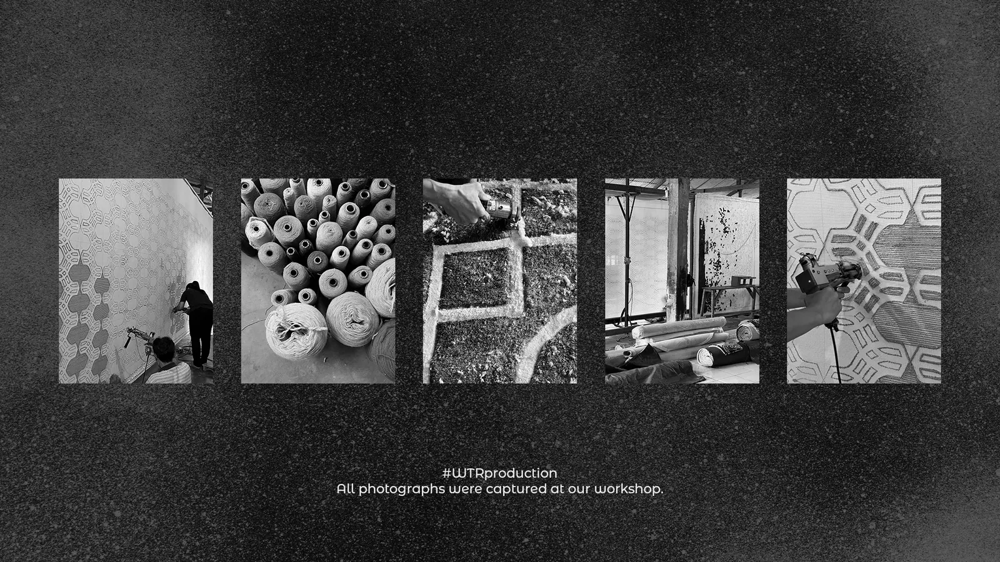
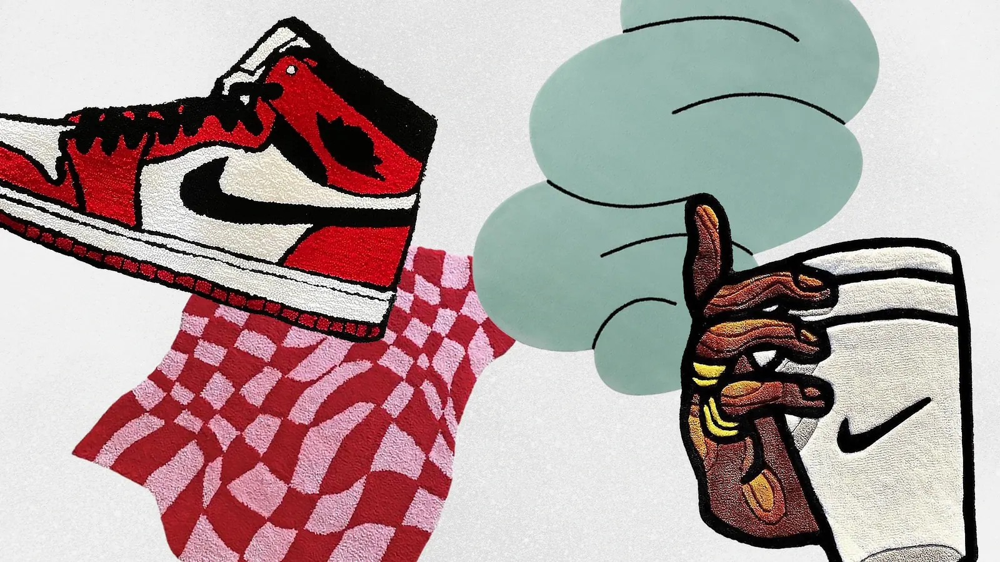
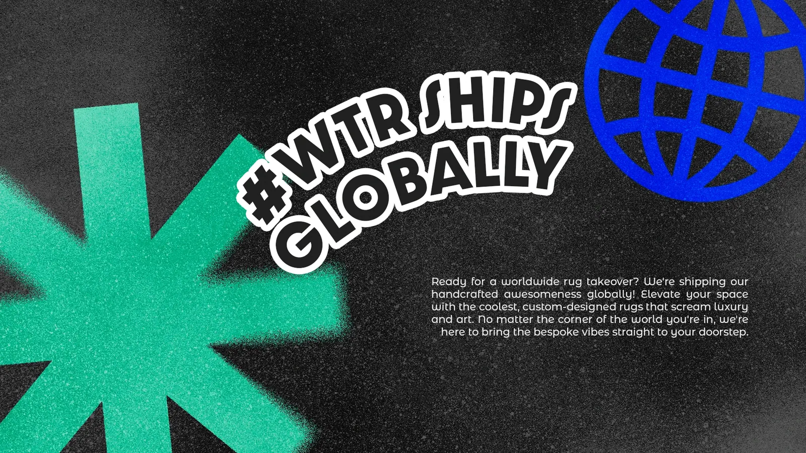

Context
Custom rugs are expressive, tactile, and personal. The visual identity needed the same energy—not the predictable look of a conventional interiors brand.
Creative direction · Custom rugs
An expressive identity built to feel as distinctive as the rugs themselves.

Project overview
Custom rugs are expressive, tactile, and personal. The visual identity needed the same energy—not the predictable look of a conventional interiors brand.
Bold typography, graphic shapes, illustration, and shifting color compositions create a system with personality while recurring visual cues keep it coherent.
02 / Editorial system
Wide editorial applications are paired with equal visual weight so the expressive work remains structured rather than chaotic.


03 / Social content
A full social grid and focused campaign detail show how varied compositions remain recognisable through recurring graphic cues.

04 / Story formats
The story-format section mirrors Opera exactly in arrangement and device treatment, while each artwork keeps the bold personality of What The Rugs.
05 / Brand applications
The final overview brings editorial, social, and campaign work together in a controlled sequence.
Outcome
The result is a flexible identity with real personality—bold enough to stand out, structured enough to stay coherent.